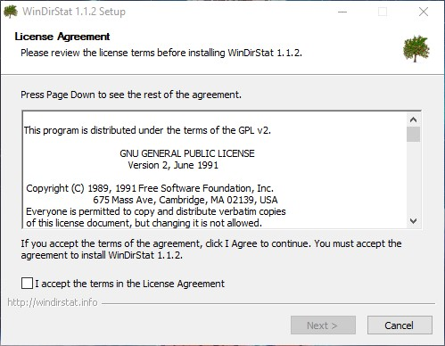
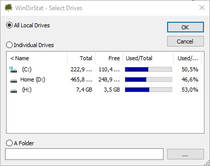
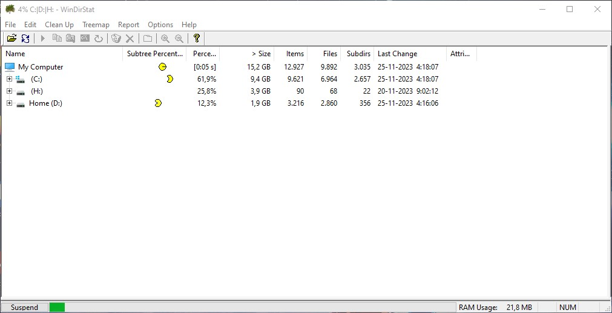

WinDirStat
WinDirStat es un visor de estadísticas de uso del disco y una herramienta de limpieza para varias versiones de Microsoft Windows.

Para esta Guia
Descargar Todos los Archivos
| Archivos | Servidores | ||
|---|---|---|---|
| Advanced IP Scanner | Mega | WEB Oficial | |
Empezando este Tutorial
- Debemos descargar el archivo FreeFileSync_xx.x_Windows_Setup de la última versión disponible
- Una vez descargado lo podemos ejecutarlo como administrador para mejor ejecución 
- Después de la instalación lo ejecutamos como administrador para mejor ejecución y seleccionamos los discos o el disco a escanear 
- Esperamos que termine de escanear el disco esto puede tomar algunos minutos dependiendo de la cantidad de archivos que contengas 
- Una vez terminado nos mostrara una pantalla con gráficos y detalles de las carpetas y archivos, mostrando los cubos más grandes de mayor tamaño de información
- Y estaríamos listo para ordenar nuestro archivos

×